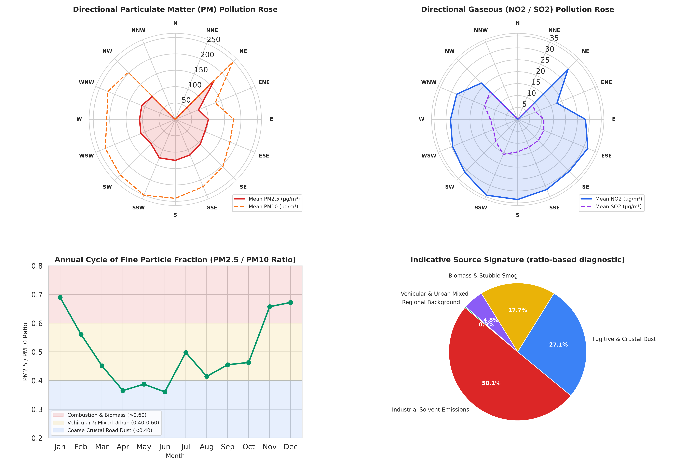
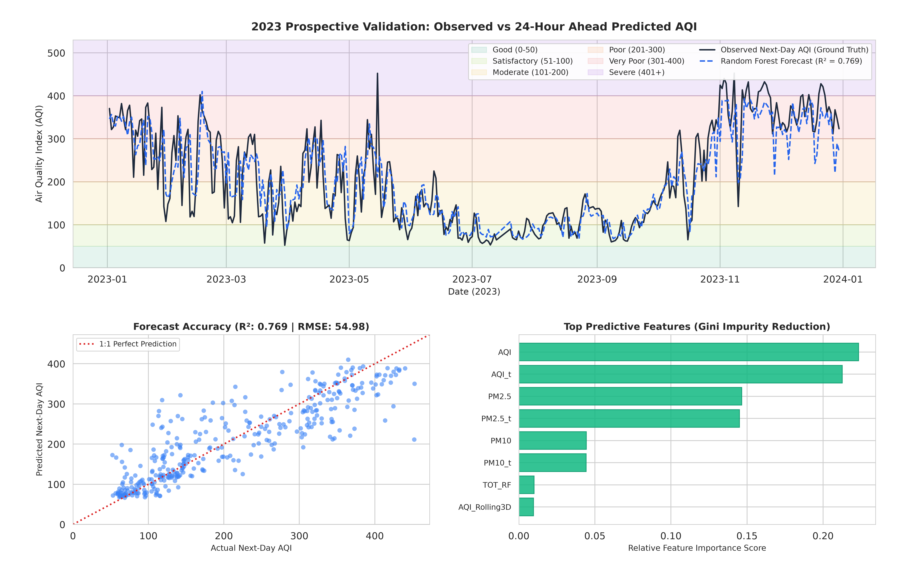

1. Daily Calculated CPCB AQI and Long-Term Trajectory
The daily Air Quality Index (AQI) was calculated in Python using the official CPCB piecewise linear interpolation methodology across monitored pollutant sub-indices (PM2.5, PM10, NO2, NH3, SO2, CO, and Ozone).
The timeseries highlights two active monitoring periods: 2017 to 2018 and 2021 to 2023. Severe post-monsoon spikes exceeding 400 AQI (the Severe category) recur consistently in November of each active monitoring year, driven by regional agricultural biomass residue burning combined with low surface wind speeds and seasonal atmospheric cooling.
2. Regulatory Sub-Index Engineering and NAAQS Compliance Matrix
Under official CPCB criteria, a regulatory AQI requires at least three criteria pollutants to be actively monitored with sufficient data completeness, including at least one particulate species (PM2.5 or PM10).
Across the 1,825 recorded calendar days, 1,137 days (62.3%) satisfied all official regulatory validity criteria. Exactly 1 day was monitored under fallback indicative rules (fewer than 3 pollutants with PM present), and 687 days represent unmonitored dropouts (dominated by the 732-day 2019 to 2020 pause). On valid days, PM2.5 (51.8%) and PM10 (43.4%) combined drove over 95% of peak sub-index determinations.
| Monitored Pollutant | CPCB 24-hr NAAQS Limit | Observed Mean | Observed Peak | Monitored Days (n) | Days Violating | Non-Compliance Rate |
|---|---|---|---|---|---|---|
| PM10 | 100 µg/m³ | 207.15 µg/m³ | 640.19 µg/m³ | 1,134 | 886 | 78.13% |
| PM2.5 | 60 µg/m³ | 107.35 µg/m³ | 529.87 µg/m³ | 1,133 | 709 | 62.58% |
| Benzene | 5.0 µg/m³ (Annual) | 2.32 µg/m³ | 13.16 µg/m³ | 1,137 | 179 | 15.74% |
| NO2 | 80 µg/m³ | 29.23 µg/m³ | 115.59 µg/m³ | 1,135 | 40 | 3.52% |
| CO | 2.0 mg/m³ | 1.07 mg/m³ | 4.02 mg/m³ | 1,136 | 32 | 2.82% |
| Ozone (O3) | 100 µg/m³ (8-hr) | 31.05 µg/m³ | 109.72 µg/m³ | 1,118 | 4 | 0.36% |
| SO2 | 80 µg/m³ | 11.83 µg/m³ | 47.10 µg/m³ | 1,121 | 0 | 0.00% |
| NH3 | 400 µg/m³ | 20.76 µg/m³ | 65.94 µg/m³ | 1,128 | 0 | 0.00% |
3. Meteorological Inversion and Seasonal Transport
During the post-monsoon and winter window (November to January), cold north-westerly surface winds transport regional combustion aerosols into the National Capital Region. Decreased surface solar heating reduces vertical atmospheric ventilation, which concentrates particulate mass in the lower atmosphere.
4. Indicative Source Diagnostics (Ratio-Based Screening)
By coupling directional wind angles with diagnostic tracer ratios (PM2.5 to PM10 fine-fraction mass ratio and Toluene to Benzene volatile organic ratio), monitoring days are categorized into indicative emission signatures across seasons.

5. Predictive Modeling Evaluation (24-Hour Ahead AQI Forecasting)
We evaluated a supervised Random Forest architecture to forecast next-day AQI using 61 lag and meteorological features.
To prevent atmospheric data leakage, the model was trained strictly on monitoring records prior to 2023 and evaluated out-of-time exclusively on the unobserved 2023 calendar year (n = 365 days).

Pipeline Code and Data Access
The data extraction scripts, sub-index math, correlation scripts, and forecasting routines are open source.